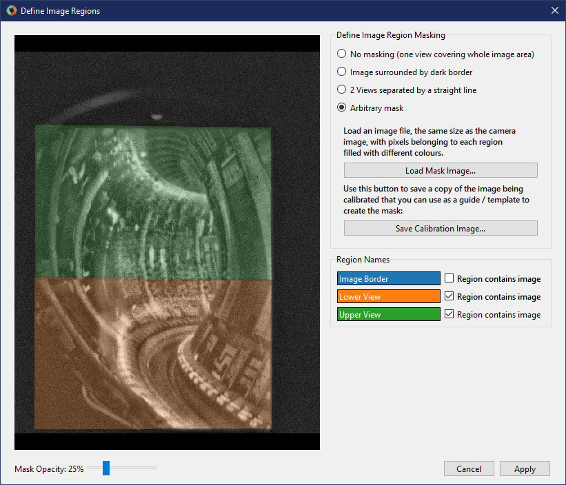

Calibration by point fitting¶
The point fitting calibration tool is the main GUI tool for performing camera calibrations. An image from a camera to be calibrated and a CAD model of the camera’s view are shown side-by-side, and the user then identifies pairs of corresponding points between the image and CAD model. These point pairs are then used to fit the camera calibration.
A screenshot of the calibration tool GUI is shown below, with the main areas annotated. At the top of the window is a toolbar with buttons to start a new calibration, open an existing calibration or save / save as the current calibration. Most of the space in the main window is taken by the side-by-side CAD and image views, where the CAD model and image to be calibrated are displayed. On the right-hand side of the window are the “control tabs”, a set of tabs where the rest of the controls reside.

Loading an Image to Calibrate¶
At the top of the Camera Image control tab is a group of controls for loading an image you want to calibrate. The From dropdown list selects the source from which you want to load the image. The options available as standard are loading from an image file (default) or loading an image from another Calcam calibration. If you define any custom image sources (see Image Sources), they will also appear in this dropdown menu. Once an image source is selected, the relevant inputs to set up the image loading appear below the dropdown list. Once the relevant fields are completed, click the Load button to load the image.
If loading an image with an existing calibration already open, e.g. to update a calibration using a more recent reference image, the loaded image must have the same dimensions as the one it is replacing. If you try to load an image with different dimensions, a dialog box will appear asking whether you want to start a new calibration or cancel loading the image. If the new image is compatible with the existing calibration, a dialog will open asking if you want to use the Camera Movement Determination tool to determine the movement between the existing image and newly loaded one. If you do this, the movement found using the Camera Movement Determination tool will be used to update all calibration points at once to align them with the new image.
Current Image Settings¶
With an image loaded, the Current Image section appears on the Camera Image tab, containing information and settings for the current image. Controls include
Known Pixel Size: If you know the pixel size of the camera, it can be entered here. This does not make any difference to the calibration except that focal lengths can be displayed in units of mm instead of pixels, which can be useful for sanity checking results e.g. comparing with optical designs or known lenses.
Geometrical Transformations: Controls for transforming the image to get it the “right way up”. It is recommended to always load images in to Calcam the way they come out straight from the camera, then use these controls to get the image right-way-up for calibration. The :guilabell:Stretch Vertically by’ button is provided for cameras with non-square pixels or anamorphic optics. Although images can still be calibrated if you leave them rotated, you must use these controls to remove any horizontal or vertical flip from the image, otherwise the calibration will not work.
Apply Image Enhancement: Enabling this option will attempt to enhance the displayed image to increase the contrast and visibility of image features which might be useful for calibration.
View Masking¶
For many camera systems, not every pixel on the detector should have the same calibration applied. In some systems the image projected by the optics does not fill the whole sensor, and some systems consist of multiple views in different directions, optically combined on to a single detector. Calcam supports these types of systems by allowing you to set up a mask specifying which pixels contain what image. This can be set up by clicking the Define… button beside the text Image masking and & sub-views. Pressing the button opens the following dialog box:
This window shows the image on the left, with any mask shown by different coloured shading. Below the image is a slider which can be used to control the opacity of the shading. Mouse navigation controls for the image are the same as for the image in the main calibration window. On the right-of the window are the different options you can select for defining the image masking:
No Masking¶
This is the default for a newly loaded image. Use this option if you have a straightforward image with all of the sensor area used.
Image Surrounded by Dark Border¶
This option is used for cases where the optical image does not fill the whole sensor - the image takes up some of the sensor area but is surrounded by a dark border where there is no real image. When selected, this option lets you click on areas where there is no image to “flood fill” a mask excluding those pixels from calibration. When you select this option, the entire image is shown shaded in colour. As you click on areas to mark them as not containing image, these ares become shaded grey. Clicking on the image multiple times adds whatever area is clicked to the excluded area. If the flood fill algorithm selects too little or too much of the image, you can adjust the threshold and median filter size for the flood fill algorithm with the provided controls. Increasing these values means a larger area will be selected with each click. If you select too much area to exclude and need to start again, use the Reset button to clear the masking and start again. When finished, the part of the sensor containing the image should be shown with a colour overlay while the part containing no image should be shaded grey, like the example below.
2 Sub-views separated by a straight line¶
This option can be used where there are 2 different fields of view (‘sub-views’) optically combined on to a single detector, with a straight line border between the two. When this option is selected, you can click two points on the image to define the line which separates the two sub-views. Once the points are placed, clicking on the image again moves the selected point (shown in green) to the clicked position. The other point can be selected by clicking it.
Custom mask for images with more than 2 sub-views or where the boundary between the sub-views is not a straight line. To use this function, prepare an image file the same size as the image to be calibrated with blocks of different solid colours representing each sub-view. You can then load this image file and the blocks of different colours will be used to define the coverage of the different sub-views.
Once the positions of the sub-views have been configured, on the lower-right of the window are boxes to enter human-friendly names for the different sub-views (see screenshot below). These will be used to identify the sub-views elsewhere in the GUI and calibration information.
Arbitrary Mask¶
This option can be used to treat more complicated situations, like if there are more than 2 different ‘sub-views’ combined on the sensor; multiple views plus some parts of the image with no image; or parts of the image are blocked by features not included in the CAD model and you wish to mark them as not containing useful images. In this case, you should prepare an image file, the same dimensions as the image being calibrated, where the distinct regions are flood-filled with different colours. You can then load this image using the Load Mask Image button and it will be used to define the image mask. The example below shows a case of an image from JET where the detector includes 2 different optically-combined views, plus some unused area: It is often useful to save a copy of the image being calibrated to use as a template / layer when creating the mask image. You can save a copy of the image being calibrated using the Save Calibration Image… button.
Once the mask image is loaded, you can give each region of the image a human-friendly name using the boxes on the right, and use the tick boxes to indicate which regions contain image to be calibrated and which do not contain image data:
When you are happy with the image masking configuration, click Apply. If you click cancel, no change will be applied to the masking configuration.
Note
After changing the masking configuration, any existing calibration fit(s) will be reset so you will have to re-run the calibration fitting.
Loading and manipulating a CAD model¶
At the top the Machine Model control tab are controls for loading a CAD model to calibrate against. Two dropdown boxes are provided to select the CAD model to load and the model variant. The Load button to the right of the model variant then loads the model. Underneath the model variant dropdown box is a checkbox labeled Enable default model features on load: if checked, the default parts of the CAD model are all loaded as soon as the model itself is loaded. If not checked, the model definition will be loaded but none of the 3D mesh data will be loaded, and instead you can turn on features individually. This is useful if working with a large model on a slow computer where you don’t want to wait for the whole model to load if not needed. You can change to a different CAD model or variant at any time by selecting a different item from the dropdown boxes and clicking Load again.
Turning CAD model parts On/Off¶
For CAD models composed of multiple parts in separate mesh files, individual mesh files can be turned on or off by ticking/unticking them in the Enable / Disable Features panel. This can be done for individual parts, groups of parts (if defined in the CAD model) or the entire model. This can be helpful to improve performance when working with large models if not all parts are necessary for a particular calibration, or for removing parts which are in the way and make the calibration more difficult.
3D ViewPort Tab¶
In addition to the mouse controls, the 3D Viewport tab can be used to control the current view of the CAD model. At the top of this tab is a list of viewports defined in the CAD model definition. Clicking on a view in this pane immediately changes the CAD viewport to that view. You can also set the view to match an existing calibrated camera by clicking the Add from calibration(s)… button below the viewport list. You can then select one or more Calcam calibration files to load, and the views defined by the calibration will be added to the viewport list on the 3D Viewport tab.
If you want to save the current view of the CAD model in to the model definition so you can easily return to it, enter a name in the Name box under the heading Save current view as preset and click Save. The view will then be added to the viewport list, and if the model definition you are using is not read-only, will be saved to the model definition for future use.
Near the bottom of the tab are editable boxes showing the current viewport’s camera position, camera view target, field of view and roll. These update automatically to reflect the current viewport, and you can manually set up the CAD view by editing these.
At the bottom of this tab are options for configuring the mouse controls for CAD navigation. The Right Click + Drag behaviour can be toggled between looking around and rotating the model about a point in front of the camera, and the mouse sensitivity can be adjusted.
Defining Calibration Points¶
Calcam uses point pairs to perform the calibration, where a point pair consists of one point on the CAD model and its corresponding point on the image. Point pairs are displayed on the CAD and image views as red + cursors at the point locations. At any given time, one point pair can be selected for editing. The selected point pair will be indicated with larger green + cursors.
Once you have identified a common feature on the image and CAD model, Ctrl + Click on the location on either the image or CAD view to create a new point pair. A point will be placed at the mouse location. Then click, without holding Ctrl, the corresponding point on the other view to finish creating the point pair. You should now see green cursors on both the CAD model and image. Clicking either the CAD model or image again will move the green cursor representing the current point to the clicked location. To start another point pair, Ctrl + Click again and repeat the process. The cursors showing the existing points will turn red, indicating they are no longer selected. In general, left clicking on either the image or CAD model will move the currently selected point to the clicked location. Clicking an existing cursor will select that point pair for editing, and holding Ctrl while clicking will start a new point pair.
If you start a new point pair before specifying both CAD and image points for an existing pair (e.g. by Ctrl+Click on the image twice in a row), this will delete the current ‘un-paired’ point and start a new point pair.
The currently selected point pair can be deleted by pressing the Delete key on the keyboard, or clicking the Remove selected button on the Calibration Points tab.
The most recent change to the points can be un-done using your platform’s normal “Undo” keyboard shortcut (e.g. Ctrl+Z on windows) or using the Undo button on the Calibration Points control tab. Up to 20 chanegs to the point pairs can be un-done in this way.
For more information, the current number of calibration points and coordinates of the currently selected points are shown in the Calibration Points control tab.
You can load a set of point pairs from an existing calcam calibration or point pairs .csv file as a starting point on the Calibration Points tab.
Using Additional Intrinsics Constraints¶
In many examples of real images, only a relatively small number of point pairs can be accurately identified. Due to the large number of free parameters in the camera model fit (focal length(s), centre of perspective, camera 3D position and orientation and distortion parameters) this can often give poor quality results. It is possible to better constrain the fits by using either existing calcam calibrations of the same camera + lens, or with images of a chessboard pattern, with known square size, taken with the same camera & lens in the lab. These add aditional constraints on the intrinsic model parameters, meaning only enough points to reliably fit the extrinsic parameters need to be identified in the image of the machine and better quality fits can be achieved. Extra intrinsics constraints can be loaded on the Calibration Points tab, under the Additional Intrinsics Constraints section. This section provides Load… buttons for both types of constraints. Once loaded, these can be included or excluded from being used for the fitting using the checkboxes next to the intrinsics constraint names.
Chessboard Images¶
It is recommended to take chessboard images for intrinsics calibration whenever possible to improve calibraition results. The images bust be taken with exact camera and lens configuration as used on the machine.
To prepare chessboard images: make a flat chessboard target with known square size (there are various printable PDFs available by searching online). Then take a number of images with this chessboard target in front of the camera at a variety of positions, orientations and distances to the camera. The example below shows thumbnails of a set of chessboard calibration images:

Chessboard images are loaded in to Calcam from the Calibration Points tab. Clicking the Load… button next to Chessboard Images in the Additional Intrinsics Constraints section will open the following window:

Chessboard loading consists of 3 steps, done in order by working down the right hand side of this window. First, browse for and select all of the chessboard images to use. Then, enter the details of the chessboard pattern: number of squares and square size. Then, select the Detect Chessboard Corners button to run an automatic detection of the boundaries between the chessboard squares. If the automatic detection fails on some images, a dialog box will open telling you which images the detection failed for, and that those cannot be used. If all images fail, check that the number of squares input is correct. Once the corner detection has been completed, cursors will be added to the image displayed on the left hand side of the window. You can pan and zoom to inspect the cursor positions using the usual image mouse controls, and look at different images using the << and >> buttons above the image. To complete loading of the images and use these as intrinsics constraints, click Apply.
Existing Calibrations¶
If loading an existing calibration to use for intrinsics constraint, the intrinsics from the existing calibration are not used directly for the new one, but rather the point pairs from the main image and any additional intrinsics constraints (e.g. chessboard images) already included in that calibration will be used as additional fit input data to constrain the camera intrinsics. Copies of the image(s) and point pairs from the opened calibration will be stored in the new calibration to maintain full traceability of the input data used for the calibration.
Fitting the camera model¶
Once enough point pairs have been identified, fitting of the camera model and checking the fit accuracy are done using the Calibration Fitting tab. At the top of this page is a set of tabs concerning each sub-view in the image, since each sub-view is calibrated independently. The following description of the fitting options and results display applies to each tab.
Fit Options¶
At the top of the page are the fitting & camera model options. The default options will typically produce good results for most images, however in some cases they will need to be adjusted to get a good quality result.
The first option to choose is whether to use the rectilinear or fisheye lens model: these two can be switched using the radio buttons at the top of the fit options section. Depending on the selected model, some or all of the following options will be available:
Disable k1…k3 These options, when checked, cause the corresponding radial distortion coefficients in the distortion model to be fixed at 0 in the fit. This can be used to change the order of the radial distortion model, and disables radial distortion entirely if all three are checked. Disabling higher order radial distortion terms can improve fits when the point pairs do not sufficiently constrain the distortion model, when the fitted results can show large erroneous distortions.
Disable Tangential Distortion This option sets the coefficients \(p_1\) and \(p_2\) in the distortion model to be fixed at 0 in the fit, i.e. disables tangential distortion in the fitted model. This can be helpful if the fitting results in large erroneous values of these coefficients.
Fix Fx = Fy This option fixes the focal lengths in the horizontal and vertical directions to be equal, i.e. fixes the image aspect ratio to 1. This is enabled by default, since for square pixels and non-anamorphic optics, which is the typical case, \(f_x = f_y\) is expected. Un-checking this option can sometimes help fit quality for some optical systems.
At the bottom of the fit options section is the Do Fit button which is used to run the fit with the current options. Alternatively, the keyboard shortcut Ctrl + F also performs a fit with the current settings for the current sub-view.
Fit Results & Checking Accuracy¶
As soon as a fit is performed, a set of re-projected points are shown on the image as blue + cursors. These are the CAD model points from the current point pairs converted to image coordinates using the fitted model, i.e. for a good fit, these should lie on top of the user-placed red cursors. Display of the fitted points can be turned on or off using the Show fitted points checkbox in the Fit Results Inspection control group, or pressing Ctrl + P on the keyboard. Once a fit is performed, a Fit Results section is displayed below the fit options and contains quantitative information about the fit results. These include the RMS fit residual and fitted extrinsic and intrinsic parameters (camera pupil position and view direction, field of view, focal length, centre of perspective and distortion parameters). Beware: for fits with small numbers of point pairs, the camera model has sufficiently many free parameters that a very small RMS fit error and good looking re-projected point positions can be obtained with a fit which is actually very bad!
A much more most robust and thorough visual check of the fit quality can be obtained by overlaying a render of the CAD model from the calibrated camera’s point of view on top of the camera image. Careful inspection of the alignment of this overlay is the recommended method for checking fit results. The overlay can be turned on by ticking the Show CAD overlay checkbox in the Fit Results Inspection control group. The CAD model is then rendered in wireframe and superimposed on the image. Note: for large images or CAD models this can be somewhat slow and memory intensive, particularly the first time it is run. By default the CAD model overlay will be rendered in wireframe to inspect the edges of CAD model features, but you can change the style between wireframe and solid-body using the dropdown box to the right of the Show CAD overlay checkbox. The colour and transparency of the CAD overlay can be adjusted using the controls which appear in this section when the overlay is turned on. For camera images of <1000 pixels width or height, the overlay will be rendered at higher resolution than the camera image which allows a clearer comparison of the alignment.
Another way to quickly get a rough idea of the fit quality, or to make subequent adding or editing of point pairs easier, is to set the CAD viewport to match the fitted model using the Set CAD view to match fit button. This will set the view of the CAD model to approximately match the fitted camera, including the position, orientation and overall field of view but neglecting any distortion and de-centring.
Note: Fit results are cleared automatically the next time the point pairs are edited in any way, to ensure any fit displayed or saved always corresponds to the current state of the point pairs.
Comparison with another calibration¶
It may sometimes be desirable to compare the current calibration fit with a different calibration of the same camera, e.g. to judge the improvement of calibration accuracy compared to a previous version, or to see camera movement between an existing calibration and the current one. To enable this, it is possible to show the CAD overlay from a different calibration file on the image in addition to the one based on the current calibration fit. The controls for this are in the Compare with existing Calibration control group at the bottom of the Calibration Fitting tab. Clicking Select… will open a file browsing dialog where you can choose the other calibration that you want to compare. The other calibration must be for an image with the same pixel dimensions (in display orientation) as the current calibration. Once loaded, the name of the reference calibration is displayed to the left of the Select… button. The CAD overlay based on the loaded calibration is then rendered and placed on top of the image similarly to the one from the current calibration, and can be turned on or off using the Show CAD overlay checkbox. Like the CAD overlay from the current fit, the colour and opacity of the comparison overlay can be adjusted as desired.
Saving / Loading and viewing calibration information¶
Once a satisfactory calibration has been obtained, the calibration can be saved to a Calcam calibration (.ccc) file using the Save / Save As buttons on the toolbar at the top of the window. The resulting file can then be loaded in the Image Analyser tool or in Python with the calcam.Calibration class to make use of the calibration. As with any computer application, it is advised to save your work regularly in case of computer crash or user error. You do not have to have a complete calibration in order to save; a calibration containing just an image, an image and point pairs or a full set of image, point pairs and fit can be saved and returned to later.
Existing calibrations can be loaded using the Open button in the toolbar at the top of the window. This will load the image, point pairs and fit results from the selected calibration file. If the CAD model which was last used for thet calibration is available, it will also load and set up the CAD model as it was the last time that file was edited.
Information about the current calibration can be viewed using the Calibration Information button on the toolbar.